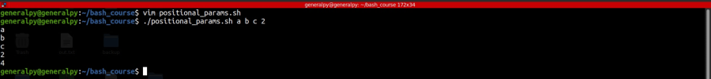
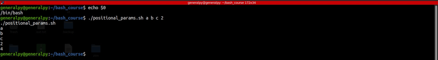
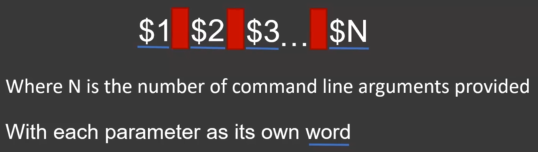
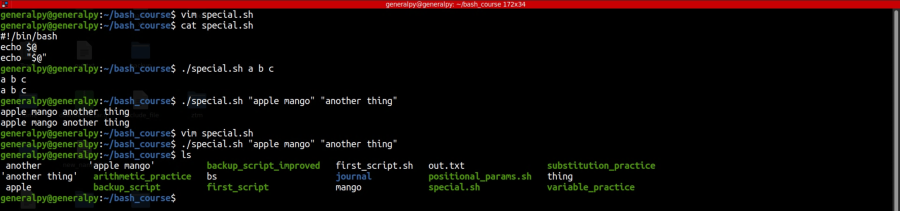
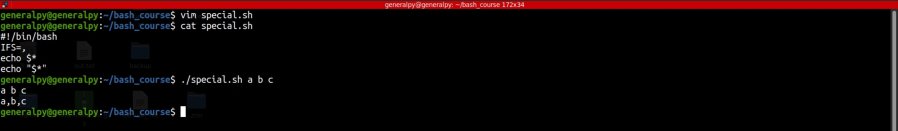

Special parameters are the unmodifiable parameters that bash defines for us to use.
Special parameters take values according to the script or context they are being used.
First special parameter we talk about is #.
# takes the value of number of parameters passed to the script.

Second one is 0. This parameter stores the name of shell if ran in a shell and name of script if ran inside a script.

Third @. $@ provides list of all positional parameters at once but output changes according to quoting.
When used without quotes, $@ returns space separated values which can be further word splitted.

When used with quotes, it returns space separated quoted values which cannot be further subjected to word splitting.

Notice how quoted values were further splitted when unquoted $@ was used.
4th special parameter is *.
Unquoted $* acts same as unquoted $@ but quoted one returns parameters sepearated by , which can be used splitted if IFS contains ,.
